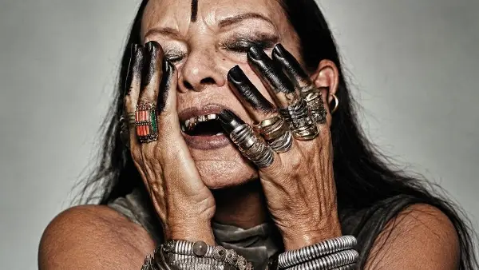
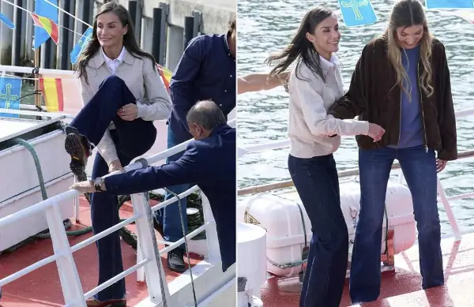

Day.mk - Најнови Вести (Страница 355)
(Фото) Кардашијан повторно ги истакна своите гради, но овој пат носи интересна креација
По белиот фустан што ѝ ги остави градите откриени, риалити ѕвездата Ким Кардашијан покажа уште едно впечатливо издание кое несомнено привлече погледи.
Кралицата Летиција се лизна на рибарски брод, а реакцијата на нејзината ќерка стана хит на интернет (ВИДЕО)
И шпанската кралица Летиција понекогаш се наоѓа во ситуации во кои би посакале земјата да се отвори под нив.

„ВЕШТЕРКА“ ИЛИ МОДНА ИКОНА? НА 82 ГОДИНИ МИШЕЛ ЛАМИ Е ЖИВ ДОКАЗ ДЕКА МОДАТА НЕ МОРА ДА БИДЕ УБАВА ЗА ДА БИДЕ ГЕНИЈАЛНА
Златни заби, прсти обоени во црно, тетовирано лице, масивни прстени и изглед што како да излегол од некој мрачен, футуристички филм.
Тешка повреда на кошаркар на Оклахома Тандер
Медицинскиот персонал веднаш му притрчал на помош По натпреварот, МВП-то на Тандер, Шеј Гилџес-Александер, се мачеше да ги најде вистинските зборови за повредата на својот соигр...
Герасимовски: Ветувањето е исполнето, финансиската помош за пензионерите во Центар зголемена од 2.500 на 5.000 денари
Герасимовски: Ветувањето е исполнето, финансиската помош за пензионерите во Центар зголемена од 2. денари Општина Центар објави јавен повик за еднократна финансиска помош за пен...
Глобална дипломатска иницијатива: Русија и Кина подготвени да го поддржат Виктор Орбан за шеф на ОН
По шестиот прелиминарен круг на гласање за избор на генерален секретар на ОН, ниту еден кандидат не успеал да ја исклучи можноста за вето од некоја од петте постојани членки на ...
(Видео) Трамп жестоко ја нападна Норвешка: „Тоа е катастрофа земја“
Трамп: Норвешка е катастрофа од земја Американскиот претседател упати критики и кон адвокатката за човекови права Нави Пилај – овогодинешната добитничка – нарекувајќи ја „жена з...
Николоски: Преку 5 милијарди евра инвестиции во коридорите 8 и 10
Македонија инвестира меѓу 5 и 6 милијарди евра во подобрување на инфраструктурата само на коридорите 8 и 10, вели вицепремиерот и министер за транспорт, Александар Николоски. Ка...

ОПС, КРАЛИЦАТА ПАДНА! И ТОА НЕ БАШ НЕЖНО: ЛЕТИЦИЈА ЗАВРШИ НА ПАЛУБАТА ПРЕД КАМЕРИТЕ
Шпанската кралица Летиција доживеа неочекувана непријатност за време на официјална посета на градот Лјанес, кога се лизна и падна на палубата на рибарски брод.
Македонка со спомени за баба ѝ, која почина на својот роденден: „Права госпоѓа, на 82 повеќе пешачеше од мене“
Наместо денес да дуваме свеќи за нејзиниот 83-ти роденден, се простивме од баба ми.
Најнови Вести